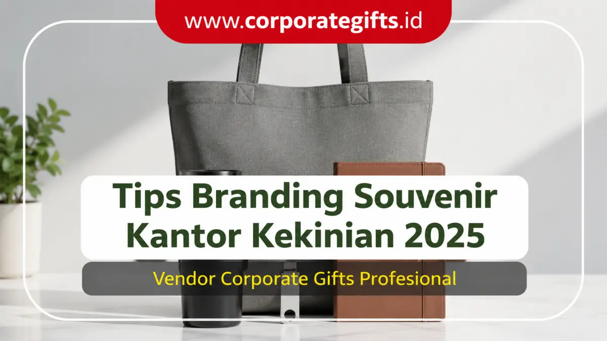

Corporate Gifts ID - Souvenir kantor kekinian 2026 sebaiknya dipilih berdasarkan 5 faktor utama, yaitu kesesuaian budget perusahaan, segmentasi target penerima, tingkat manfaat produk, kualitas desain material, dan dukungannya terhadap strategi branding korporat. Kelima faktor ini memastikan souvenir tidak hanya menjadi hadiah pelengkap, melainkan instrumen promosi efektif yang mencerminkan kelas profesionalisme institusi.
Souvenir kantor telah lama menjadi bagian tak terpisahkan dalam agenda korporat, mulai dari seminar, workshop, rapat kerja tahunan, gathering karyawan, hingga acara promosi B2B. Di tahun 2026, fungsi souvenir berkembang jauh lebih strategis: menjadi medium apresiasi personal, penguat loyalitas kemitraan, dan alat komunikasi merek yang konsisten.
Poin Kunci Pemilihan Souvenir Kantor 2026:
- Investasi Branding Nyata: Kualitas produk souvenir berkorelasi langsung dengan persepsi publik terhadap kredibilitas brand Anda.
- Segmentasi Penerima: Bedakan item untuk peserta massal, onboarding internal, dan gift set eksklusif klien VIP.
- Prinsip Utilitas Harian: Produk seperti tumbler stainless SUS 304, wireless charger, dan notebook kulit memberikan eksposur merek tanpa putus.
- Mitigasi Pemborosan Budget: Perencanaan timeline yang matang mencegah biaya darurat dan kegagalan quality control.
- Dukungan Dokumen B2B: Pastikan pengadaan didukung kelengkapan e-Faktur Pajak, SPK/PO, dan garansi produksi tepat waktu.
Kenapa Pemilihan Souvenir Kantor Penting untuk Branding?
Souvenir bukan sekadar barang pajangan, melainkan perwakilan visual dari nilai-nilai perusahaan. Berikut 3 alasan utama mengapa pemilihan souvenir kantor perlu dilakukan secara cermat:
- Mencerminkan Citra & Standar Mutu Perusahaan: Kualitas material dan kerapian hasil cetak logo akan diasosiasikan langsung oleh penerima dengan standar profesionalisme bisnis Anda.
- Menciptakan Retensi Brand Jangka Panjang: Souvenir yang fungsional akan digunakan berulang kali di ruang kerja, memastikan logo perusahaan senantiasa terlihat setiap hari.
- Membedakan Perusahaan dari Kompetitor: Desain cenderamata yang unik, inovatif, dan relevan dengan tren 2026 membuat brand Anda lebih menonjol di mata mitra strategis.
Faktor Utama Memilih Souvenir Kantor Kekinian 2026
1. Sesuaikan dengan Budget & Skala Acara
Alokasi anggaran menjadi fondasi utama dalam proses procurement. Menghadirkan souvenir berkesan tidak selalu harus mahal, asalkan dikurasi sesuai kategori harga yang proporsional:
- Souvenir Ekonomis (Rp15.000 - Rp40.000): Pulpen metal custom, blocknote spiral, pouch blacu, atau tote bag kanvas sederhana untuk promosi massal.
- Souvenir Standar (Rp40.000 - Rp100.000): Tumbler vacuum stainless SUS 304, payung lipat otomatis, dan agenda planner bercover kulit sintetis.
- Souvenir Premium (>Rp100.000): Paket gift set eksklusif, smart digital set, wireless powerbank, dan jam meja kayu elegan.
2. Kenali Target Penerima Souvenir
Segmentasi audiens memastikan barang yang dibagikan tepat sasaran dan memberikan nilai relevansi tinggi bagi penerimanya:
- Klien VIP & Mitra Bisnis: Lebih tepat diberikan souvenir eksklusif bernuansa subtle branding seperti executive desk set atau hampers magnetik.
- Karyawan Internal & Onboarding: Memerlukan peralatan kerja praktis seperti welcome kit berisi tumbler, lanyard, dan notebook A5.
- Generasi Milenial & Gen Z: Cenderung menyukai produk dengan estetika minimalis, tone warna pastel atau earth-tone, dan teknologi nirkabel modern.

Kombinasi cenderamata kantor fungsional yang menggabungkan drinkware stainless, stationery berkelas, dan tas jinjing ramah lingkungan.
3. Pilih Souvenir yang Memberikan Nilai Manfaat Nyata
Barang yang bermanfaat akan disimpan dan dipakai dalam rutinitas kerja harian. Sebaliknya, souvenir yang tidak memiliki fungsi praktis berisiko berakhir di tempat sampah. Contoh produk dengan tingkat retensi tertinggi meliputi tumbler penahan suhu, flashdisk kartu OTG, wireless charging pad, dan organizer meja kerja.
4. Prioritaskan Kualitas Material dan Kerapian Desain
Jangan pernah mengorbankan kualitas demi mengejar harga murah yang tidak masuk akal. Cenderamata yang mudah patah, tumbler bocor, atau sablon logo yang mengelupas akan merusak kredibilitas perusahaan. Pastikan teknik branding seperti laser grafir pada logam atau deboss pada kulit dikerjakan dengan presisi tinggi.
5. Pertimbangkan Tren Souvenir Kantor 2026
Menyelaraskan cenderamata dengan tren terkini memberikan kesan institusi yang progresif dan modern:
- Eco-Friendly & Sustainable: Penggunaan material kayu terbarukan, bambu alami, dan kemasan bebas plastik yang mendukung target keberlanjutan ESG.
- Smart Gadgets: Powerbank fast-charging, smart tumbler dengan indikator suhu LED, serta bluetooth tracker.
- Aesthetics Minimalist: Desain bersih dengan warna monokrom (hitam, abu-abu, navy, putih) yang tampak mewah tanpa ornamen berlebihan.
Kesalahan Umum dalam Pengadaan Souvenir Kantor
Hindari 4 jebakan umum yang sering dialami tim procurement korporat saat menyiapkan cenderamata:
- Terjebak Pembelian Harga Paling Murah: Produk berharga terlampau murah sering kali memiliki kecacatan produksi tersembunyi yang merugikan nama baik instansi.
- Kurang Memperhatikan Kesesuaian Audiens: Membagikan gadget teknologi rumit kepada peserta yang membutuhkan alat tulis praktis atau sebaliknya.
- Branding yang Terlalu Mencolok (Over-Branding): Logo perusahaan yang dicetak terlalu besar di semua sisi barang membuat penerima enggan menggunakannya di tempat umum.
- Pemesanan Terlalu Mepet (Rush Order): Mengabaikan estimasi waktu produksi dan pengiriman menyebabkan proses quality control terlewati.
Tabel Matriks Kategori Souvenir Kantor Sesuai Kebutuhan
Berikut panduan matriks kategori souvenir kantor kekinian, contoh kombinasi produk, rekomendasi audiens sasaran, dan estimasi biaya per unit:
| Kategori Souvenir | Contoh Kombinasi Item | Rekomendasi Target Penerima | Estimasi Biaya / Unit |
|---|---|---|---|
| Branding Promosi Massal | Tote Bag Kanvas, Kaos Polo Bordir, Pulpen Metal Grafir, Lanyard | Peserta Pameran, Event CSR, Promosi Brand Eksternal | Rp15.000 - Rp45.000 |
| Souvenir Standar Kantor | Tumbler SUS 304, Payung Lipat Otomatis, Blocknote Spiral, Pen Set | Peserta Seminar Korporat, Karyawan Onboarding Kit | Rp45.000 - Rp95.000 |
| Tech & Smart Gadgets | Powerbank Fast Charging, Wireless Charger Pad, Flashdisk OTG Metal | Pegawai Startup, Peserta Workshop Teknologi, Komunitas Digital | Rp75.000 - Rp175.000 |
| Eco-Friendly Green Gift | Tumbler Bambu Natural, Notebook Daur Ulang, Pouch Blacu Organik | Instansi Peduli Lingkungan, Kampanye ESG, Event Hijau | Rp35.000 - Rp85.000 |
| Executive VIP Gift Set | Agenda Kulit Monogram, Pen Metal Rollerball, Smart Tumbler, Hardbox | Klien Prioritas, Dewan Direksi, Tamu Kehormatan Pejabat | Rp150.000 - Rp450.000+ |
Checklist Praktis Memilih Souvenir Kantor
Gunakan checklist audit singkat ini sebelum Anda meresmikan Surat Perintah Kerja (SPK) pemesanan cenderamata:
- [ ] Pagu Anggaran Jelas: Apakah total biaya pesanan sudah memperhitungkan Pajak Pertambahan Nilai (PPN 11%) dan ongkos kirim?
- [ ] Relevansi Fungsi: Apakah barang tersebut benar-benar dibutuhkan dan bernilai guna tinggi bagi penerima?
- [ ] Proporsi Logo: Apakah penempatan logo terlihat proporsional, elegan, dan tidak terkesan berlebihan?
- [ ] Sampel Mockup Disetujui: Apakah Anda telah memeriksa mockup digital 3D atau dummy fisik sebelum produksi massal?
- [ ] Legalitas Vendor Terverifikasi: Apakah vendor berbadan hukum resmi, memiliki reputasi portofolio terpercaya, dan mampu menerbitkan faktur B2B?
Kesimpulan dan Konsultasi Pengadaan Resmi
Memilih souvenir kantor kekinian 2026 bukan sekadar mencari barang pajangan berharga murah, melainkan investasi strategis dalam membangun reputasi brand yang terpercaya dan memperkuat hubungan bisnis jangka panjang.
Corporate Gifts ID siap mendampingi tim pengadaan instansi Anda dengan pilihan produk terlengkap, jaminan ketepatan waktu, dan layanan sampel mockup digital gratis. Jelajahi aneka koleksi di katalog produk resmi kami atau ajukan estimasi anggaran melalui formulir permintaan penawaran harga sekarang juga.
Pertanyaan Umum Seputar Souvenir Kantor (FAQ)
Disclaimer: Estimasi biaya dan spesifikasi item souvenir kantor dalam panduan ini dapat disesuaikan secara fleksibel dengan alokasi anggaran instansi Anda melalui tim konsultan resmi CorporateGifts.ID.


-min.webp)